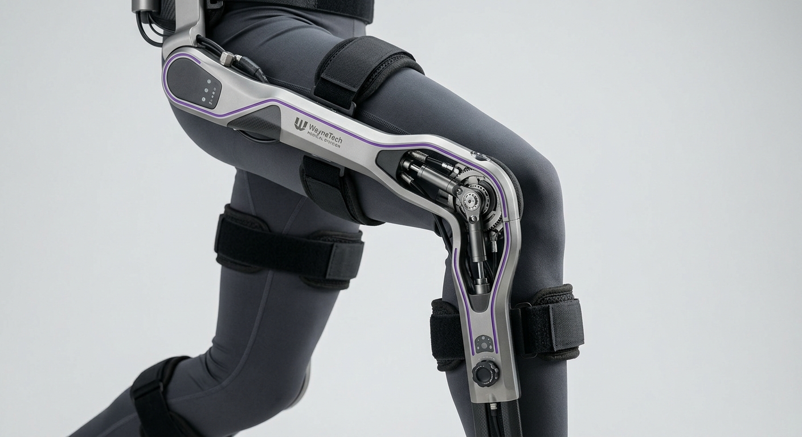

WAYNETECH // DIVISION R&D : Médicale.
Exo-Squelette // Mobilité
Fiche Projet : Stride

Caractéristiques Générales
- Format
- Orthèse motorisée de genou et de jambe
- Matériau
- Titane et fibre de carbone
- Poids
- 1,9 kg (par jambe)
- Autonomie
- Jusqu'à 10h d'usage actif
- Recharge
- Complète en 2h
- Réglage
- Sangles ajustables cuisse/mollet
Fonctionnement
- Assistance motorisée au mouvement du genou
- Ajustement automatique de la résistance selon l'effort
- Détection de la marche pour anticiper chaque pas
- Panneau de contrôle avec indicateurs de charge et de mode
Accessibilité & Aide A La Mobilité
- Personnes en perte de mobilité du genou ou de la jambe
- Personnes amputées en rééducation avec prothèse
- Vétérinaires ou anciens combattants blessés sur le terrain
- Usage quotidien comme en rééducation encadrée
Ce Qu'Il Faut Savoir
- Développé avec des kinésithérapeutes et médecins spécialisés
- Réglages personnalisables selon la morphologie
- Confortable pour un port prolongé
- Suivi et ajustement possibles avec un professionnel de santé WayneTech
- Garantie constructeur 2 ans